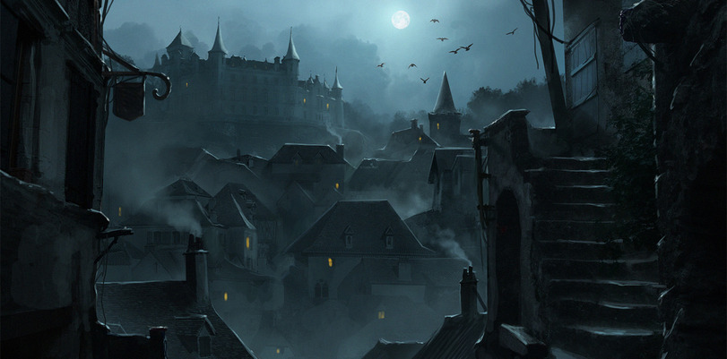

— Здравствуй! Я смотрю, вы увеличили меру безопасности перед праздником Нуллы.
— Здравствуй! Я смотрю, вы увеличили меру безопасности перед праздником Нуллы.
Было решено драться с двумя бандитами
Как бы то ни было, вы без труда вырубили их и сложили их под кустом неподалёку
У ворот города стоял стражник и проверял горожан. Видимо, город беспокоился о безопасности в данное время
— Здравствуй! Я смотрю, вы увеличили меру безопасности перед праздником Нуллы.
 — Да, есть такое. Ты кто таков? Для чего приехал?
— Да, есть такое. Ты кто таков? Для чего приехал?
— На фестиваль приехал к работадателю, праздник Нуллы как-никак, авось подкинет работёнку
— Как работадателя звать?
— Свен Траслауг
— Достаточно известная личность. Проходи. ОТКРЫТЬ ВОРОТА!

"Отлично. Следующее, что мне нужно - выведать информацию о Генри"